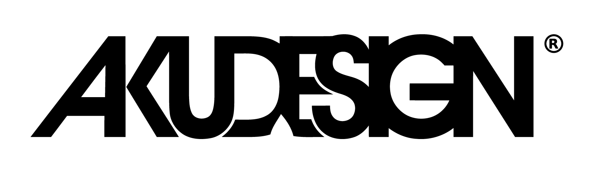

My first website built with HTML & CSS
BIODATA
Universiti Teknologi MARA (UiTM) is the largest comprehensive
university in Malaysia providing innovative education with state-of-the-art infrastructure
and technology within reach at its 34 campuses, 4 colleges of studies, 13 faculties, and 9 academic centres all over the country.
UiTM offers over 500 academic programmes at Foundation, Pre-Diploma, Diploma, Bachelor’s, Master’s, and PhD levels, as well as Professional Programmes. It continues to expand access to higher education, playing its role in nation-building by unleashing potentials and shaping the future.
Amongst its long list of recent accolades, UiTM is ranked 105th in the QS Asia University Rankings 2022, placed 651–700 in the QS World University Rankings 2022, and was ranked 361-380 for QS World University Rankings: Sustainability 2023 and 4th in Malaysia. The Hospitality and Leisure Management subject was placed 42nd best in the world, and overall, 14 UiTM subjects are ranked in the QS World University.
With over 900,000 alumni in science, technology, humanities, and entrepreneurship, UiTM offers opportunities to shape leaders at national, industry, and global levels and is well poised to become a globally renowned university by 2025.